<html>
<!doctype html>
<html amp lang="en">
  <head>
    <meta charset="utf-8">
    <script async amp-img src="https://cdn.ampproject.org/v0.js"></script>
    <title>Hello, AMPs</title>
    <link rel="canonical" href="http://example.ampproject.org/article-metadata.html">
    <meta name="viewport" content="width=device-width,minimum-scale=1,initial-scale=1">
    <script type="application/ld+json">
      {
        "@context": "http://schema.org",
        "@type": "NewsArticle",
        "headline": "Open-source framework for publishing content",
        "datePublished": "2015-10-07T12:02:41Z",
        "image": [
          "logo.jpg"
        ]
      }
    </script>
    <style amp-boilerplate>body{-webkit-animation:-amp-start 8s steps(1,end) 0s 1 normal both;-moz-animation:-amp-start 8s steps(1,end) 0s 1 normal both;-ms-animation:-amp-start 8s steps(1,end) 0s 1 normal both;animation:-amp-start 8s steps(1,end) 0s 1 normal both}@-webkit-keyframes -amp-start{from{visibility:hidden}to{visibility:visible}}@-moz-keyframes -amp-start{from{visibility:hidden}to{visibility:visible}}@-ms-keyframes -amp-start{from{visibility:hidden}to{visibility:visible}}@-o-keyframes -amp-start{from{visibility:hidden}to{visibility:visible}}@keyframes -amp-start{from{visibility:hidden}to{visibility:visible}}</style><noscript><style amp-boilerplate>body{-webkit-animation:none;-moz-animation:none;-ms-animation:none;animation:none}</style></noscript>
 
<head>

<title>10 Best khao Sok Tours| Khao Sok | Thailand | khaosok-travel.com</title>
<meta name="description" content="Khao Sok Tour - Local Tour Agent, All budgets&#8206; Khao Sok Tour Daytrip Floating House  floating bungalows  how to get to khao sok national park khao sok national park hotels tree house">
<meta name="keywords" content="Khaosok, Khao Sok National Park, Khao Sok Guesthouse, Khao Sok Travel, Khao Sok Tour">
<meta property="og:title" content="Khao Sok Travel Khao Sok Tourism Guide"/>
<meta name="viewport" content="width=device-width, initial-scale=1">
<meta http-equiv="Content-Language" content="en-us">
<meta name="google-site-verification" content="MA8xR91c7QndC5KujUsmbj2wY0xsQ77Nz4lr9Cq5Scc" />
<meta property="og:type" content="website"/>
<meta property="og:url" content="https://www.khaosok-travel.com/"/>
<meta property="og:site_name" content="Khao Sok Tour Travel Hotel Resort"/>
<meta property="fb:admins" content="Khao Sok Travel"/>
<meta property="og:description" content="Khao Sok Travel Packages Daytrip Floating House floating bungalows National."/>
<meta name="allow-search" content="yes">
<meta name="audience" content="all">
<meta name="robots" content="all, index, follow">
<meta name="revisit-after" content="7 days">
<meta name="Rating" content="General">
<meta name="Language" content="en">
<meta name="distribution" content="Global">
<meta name='author' content='rachadaphuket@gmail.com/'>
<meta name="classification" content="tourism travel and adventure"/>
</head>
</style>
  </body>
   </head>
  <body>
  </body>
</html>
</html>
<link href="styles/font.css" rel="stylesheet" type="text/css" />
<style type="text/css">
<!--
body {
	margin-left: 0px;
	margin-top: 0px;
	margin-right: 0px;
	margin-bottom: 0px;
}
a:link {
	text-decoration: none;
}
a:visited {
	text-decoration: none;}
a:hover {
	text-decoration: none;}
a:active {
	text-decoration: none;}
-->
</style>
<script type="text/JavaScript">
</script>
<script amp-img src="Scripts/AC_RunActiveContent.js" type="text/javascript"></script>
<script type="text/JavaScript"> 
<!--
function MM_findObj(n, d) { //v4.01
  var p,i,x;  if(!d) d=document; if((p=n.indexOf("?"))>0&&parent.frames.length) {
    d=parent.frames[n.substring(p+1)].document; n=n.substring(0,p);}
  if(!(x=d[n])&&d.all) x=d.all[n]; for (i=0;!x&&i<d.forms.length;i++) x=d.forms[i][n];
  for(i=0;!x&&d.layers&&i<d.layers.length;i++) x=MM_findObj(n,d.layers[i].document);
  if(!x && d.getElementById) x=d.getElementById(n); return x;
}
 
function MM_preloadImages() { //v3.0
  var d=document; if(d.images){ if(!d.MM_p) d.MM_p=new Array();
    var i,j=d.MM_p.length,a=MM_preloadImages.arguments; for(i=0; i<a.length; i++)
    if (a[i].indexOf("#")!=0){ d.MM_p[j]=new Image; d.MM_p[j++].amp-img src=a[i];}}
}
 
function MM_swapImgRestore() { //v3.0
  var i,x,a=document.MM_sr; for(i=0;a&&i<a.length&&(x=a[i])&&x.oamp-img src;i++) x.amp-img src=x.oamp-img src;
}
 
function MM_swapImage() { //v3.0
  var i,j=0,x,a=MM_swapImage.arguments; document.MM_sr=new Array; for(i=0;i<(a.length-2);i+=3)
   if ((x=MM_findObj(a[i]))!=null){document.MM_sr[j++]=x; if(!x.oamp-img src) x.oamp-img src=x.amp-img src; x.amp-img src=a[i+2];}
}
//-->
</script>
</style>
<script type="text/JavaScript">
</script>
<script amp-img src="Scripts/AC_RunActiveContent.js" type="text/javascript"></script>
</head>
<font size="1">Welcome to the mobile web</font><body bgcolor="#000000" style="background-color: #00201a; background-image: url('')"><div align="center">

<div align="center">
	<table border="0" width="997" cellspacing="0" cellpadding="0">
		<tr>
			<td>
<table border="0" width="100%" cellspacing="5" cellpadding="0" bgcolor="#F4AD06">
	<tr>
		<td>
		<p align="center">
		<font face="Arial" style="font-size: 14px;">&nbsp;&nbsp;&nbsp;&nbsp;&nbsp; 
		Khao Sok - Thailand&nbsp; : Khao Sok Travel</font><font face="Arial" style="font-size: 14px; ">-
		</font><font face="Arial" style="font-size: 14px;">Khao Sok's 
		official website travel information guide.</font></td>
	</tr>
</table>

			<table border="0" width="997" cellspacing="0" cellpadding="0" height="110" bgcolor="#000000">
				<tr>
					<td><map name="FPMap0">
					<area href="khaosok-flower-plants.html" shape="rect" coords="730, 10, 970, 85">
					<area href="khaosok-birds.html" shape="rect" coords="15, 9, 715, 93">
					</map>
					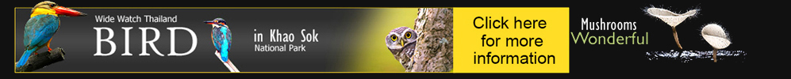</td>
				</tr>
</table>

			</td>
		</tr>
		</table>
	<div align="center">
		<table border="0" width="997" cellspacing="0" cellpadding="0" height="593" background="kop.jpg">
			<tr>
				<td align="right" width="100%" valign="top">
				<div align="center">
					<table border="0" cellspacing="0" cellpadding="0">
						<tr>
							<td>
					<table border="0" width="100%" cellspacing="0" cellpadding="0">
						<tr>
							<td height="40">
							&nbsp;</td>
						</tr>
						<tr>
							<td align="center" valign="bottom">
							<h1 align="center">
						<span style="font-weight: 700">
								<font color="#FFFFFF" face="Arial" style="font-size: 80px">Khao 
						Sok
							Travel</font></span></h1>
							</td>
						</tr>
						<tr>
							<td><hr color="#C0C0C0" width="50%"></td>
						</tr>
						<tr>
							<td>&nbsp;</td>
						</tr>
						<tr>
							<td align="center" valign="top">
							<p align="center">
							<font face="Arial" style="font-size: 14px;" color="#FFFFFF">
							Travel in Khaosok with us: find out the 
							best places to visit in Khaosok, <br>
							when to go, and read about Khao sok, Chiewlan Lake,
							<br>
							Raft House ,Tree house and rainforestsm
							<a href="http://www.booking.com/hotel/th/khaosok-treehouse-resort.html?aid=1307406&no_rooms=1&group_adults=1">
							<font color="#FFFFFF">Cottage in the forest for rent.</font></a></font></td>
						</tr>
					</table>
							</td>
						</tr>
					</table>
	<table border="0" cellspacing="0" cellpadding="0">
		<tr>
			<td width="230" align="left" valign="top">
			<div align="center">
				<table border="0" width="70%" cellspacing="0" cellpadding="4">
					<tr>
						<td>&nbsp;      
						<div id="translate">
							<div id="google_translate_element"></div><script>
function googleTranslateElementInit() {
  new google.translate.TranslateElement({
    pageLanguage: 'en'
  }, 'google_translate_element');
}
</script><script amp-img src="http://translate.google.com/translate_a/element.js?cb=googleTranslateElementInit"></script> 
						</td>
					</tr>
					<tr>
						<td>&nbsp;</td>
					</tr>
				</table></div>
			</td>
		</tr>
	</table>

				</div>

				</td>
			</tr>
		</table>
		<table border="0" width="997" cellspacing="10" cellpadding="0" height="40">
			<tr>
				<td align="left">
				<font face="Arial" style="font-size: 14px" color="#FFFFFF">
				<a href="khaosok-history.html"><font color="#C0C0C0">Khao Sok<br>
				History</font></a></font></td>
				<td align="left">
				<font face="Arial" style="font-size: 14px" color="#FFFFFF">
				<a href="khaosok-travel-guide.html"><font color="#C0C0C0">Khao 
				Sok<br>
				Travel Guide</font></a></font></td>
				<td align="left">
				<font face="Arial" style="font-size: 14px" color="#FFFFFF">
				<a href="khaosok-daytrip.html"><font color="#C0C0C0">Khao Sok<br>
				Tours</font></a></font></td>
				<td align="left">
				<font face="Arial" style="font-size: 14px" color="#FFFFFF">
				<a href="khaosok-rafthouse.html"><font color="#C0C0C0">Khao Sok<br>
				Raft House</font></a></font></td>
				<td align="left">
				<font face="Arial" style="font-size: 14px" color="#FFFFFF">
				<a href="khaosok-hotel.html"><font color="#C0C0C0">Khao Sok<br>
				Hotels</font></a></font></td>
				<td align="left">
				<font face="Arial" style="font-size: 14px" color="#FFFFFF">
				<a href="khaosok-transfer.html"><font color="#C0C0C0">Khao Sok<br>
				Transfer</font></a></font></td>
				<td align="left">
				<font face="Arial" style="font-size: 14px" color="#FFFFFF">
				<a href="khaosok-map.html"><font color="#C0C0C0">Khao Sok<br>
				Photo&amp;Map</font></a></font></td>
				<td align="left">
				<font face="Arial" style="font-size: 14px" color="#FFFFFF">
				<a href="khaosok-national-park.html"><font color="#C0C0C0">Khao 
				Sok<br>
				National Park</font></a></font></td>
				<td align="left">
				<font face="Arial" style="font-size: 14px" color="#FFFFFF">
				<a href="khaosok-weather.html"><font color="#C0C0C0">Khao Sok<br>
				Weather</font></a></font></td>
			</tr>
		</table>
	</div>
</div>
</div>

<div align="center">
				<table border="0" width="997" cellspacing="0" cellpadding="0">
					<tr>
						<td align="right" width="190" valign="top" bgcolor="#FFFFFF">
						<!--webbot bot="Include" U-Include="links-home.htm" TAG="BODY" startspan -->

<div align="left">
	<table border="0" width="190" cellspacing="0" cellpadding="0">
		<tr>
			<td align="left" valign="top"><font color="#EFEFEF">
			</font></td>
		</tr>
		<tr>
			<td align="right" valign="top">
			<div align="left">
			<table border="0" width="95%" cellspacing="0" cellpadding="6">
				<tr>
					<td colspan="2">
								</td>
				</tr>
				<tr>
					<td colspan="2"><hr color="#C0C0C0" width="70%" size="5"></td>
				</tr>
				<tr>
					<td width="23%" align="right">
					</td>
					<td align="left" width="64%">
					<p align="left">
					<a href="index.html">
					<font face="Arial" style="font-size: 14px; text-decoration: none; " color="#336600">
					Home Page</font></a></td>
				</tr>
				<tr>
					<td width="23%" align="right">
					</td>
					<td align="left" width="64%">
					<p align="left">
					<font face="Arial" style="font-size: 14px" color="#EFEFEF">
					<a href="khaosok-travel-guide.html"><font color="#336600">
					<span style="text-decoration: none; ">Travel Guide</span></font></a></font></td>
				</tr>
				<tr>
					<td width="23%" align="right">
					</td>
					<td align="left" width="64%">
					<p align="left">
					<a href="khaosok-daytrip.html">
					<font face="Arial" style="font-size: 14px; text-decoration: none" color="#336600">
					Tours</font></a><font face="Arial" style="font-size: 14px" color="#336600">
					</font>
					<font face="Arial" style="font-size: 14px" color="#FFFFFF">
					<a href="khaosok-daytrip.html">
					<span style="text-decoration: none"><font color="#336600">&amp; 
					Packages</font></span></a></font></td>
				</tr>
				<tr>
					<td width="23%" align="right">
					</td>
					<td align="left" width="64%">
					<p align="left">
					<font face="Arial" style="font-size: 14px" color="#EFEFEF">
					<a href="khaosok-attraction.html"><font color="#336600">
					<span style="text-decoration: none; ">Attraction</span></font></a></font></td>
				</tr>
				<tr>
					<td width="23%" align="right">
					</td>
					<td align="left" width="64%">
					<p align="left">
					<font face="Arial" style="font-size: 14px" color="#EFEFEF">
					<a href="khaosok-rafthouse.html"><font color="#336600">
					<span style="text-decoration: none; ">Rafthouse</span></font></a></font></td>
				</tr>
				<tr>
					<td width="23%" align="right">
					</td>
					<td align="left" width="64%">
					<p align="left">
					<font face="Arial" style="font-size: 14px" color="#EFEFEF">
					<a href="khaosok-hotel.html"><font color="#336600">
					<span style="text-decoration: none; ">Hotel&amp;Resort</span></font></a></font></td>
				</tr>
				<tr>
					<td width="23%" align="right">
					</td>
					<td align="left" width="64%">
					<p align="left">
					<font face="Arial" style="font-size: 14px" color="#EFEFEF">
					<a href="khaosok-transfer.html"><font color="#336600">
					<span style="text-decoration: none; ">Transfer</span></font></a></font></td>
				</tr>
				<tr>
					<td width="23%" align="right">
					</td>
					<td align="left" width="64%">
					<p align="left">
					<font face="Arial" style="font-size: 14px" color="#EFEFEF">
					<a href="khaosok-weather.html"><font color="#336600">
					<span style="text-decoration: none; ">Weather</span></font></a></font></td>
				</tr>
				<tr>
					<td width="23%" align="right">
					</td>
					<td align="left" width="64%">
					<p align="left">
					<font face="Arial" style="font-size: 14px" color="#EFEFEF">
					<a href="khaosok-map.html"><font color="#336600">
					<span style="text-decoration: none; ">Maps</span></font></a></font></td>
				</tr>
				<tr>
					<td width="23%" align="right">
					</td>
					<td align="left" width="64%">
					<p align="left">
					<font face="Arial" style="font-size: 14px" color="#EFEFEF">
					<a href="khaosok-national-park.html"><font color="#336600">
					<span style="text-decoration: none; ">National Park</span></font></a></font></td>
				</tr>
				<tr>
					<td width="23%" align="right">
					</td>
					<td align="left" width="64%">
					<p align="left">
					<a href="contact.html">
					<font face="Arial" style="font-size: 14px; text-decoration: none; " color="#336600">
					Booking</font></a></td>
				</tr>
				<tr>
					<td colspan="2"><hr color="#C0C0C0" width="70%" size="5"></td>
				</tr>
				</table>
			</div>
			</td>
		</tr>
		</table>
</div>

<!--webbot bot="Include" i-checksum="11798" endspan --><table border="0" cellspacing="0" cellpadding="0" style="font-family: &quot;Roboto Condensed&quot;, sans-serif; letter-spacing: normal; orphans: 2; text-indent: 0px; text-transform: none; widows: 2; word-spacing: 0px; -webkit-text-stroke-width: 0px; text-decoration-style: initial; text-decoration-color: initial;" bgcolor="#FFFFFF">
							<tr>
								<td>
								<p align="center">
								<font face="Tahoma" color="#303030" style="font-size: 12px; ">
								P a r t n e r s<br>
								s u p p o r t</font><font face="Tahoma" color="#303030" style="font-size: 12px; font-weight: 700;">&nbsp;</font></td>
							</tr>
							<tr>
								<td>&nbsp;<p>
								<br>
								<br>
								<br>
								<br>
								<br>
								<br>
								<br>
								</td>
							</tr>
						</table>
						<p>&nbsp;</td>
						<td bgcolor="#FFFFFF" align="left" valign="top">
						<table border="0" width="100%" cellspacing="10" cellpadding="0" bgcolor="#FFFFFF">
					<tr>
						<td align="left" valign="top" width="61%" background="qqqqeqeqee.jpg">
						<h2>
						<span style="font-weight: 700">
								<font face="Arial Narrow" style="font-size: 26px">
						Khao Sok -Thailand Travel Guides</font></span></h2>
						<p>
						<font face="Arial" style="font-size: 14px">
						Khao Sok�s official website&nbsp; travel 
						information, We offer many service for our guest helping 
						make their stay at our raft house as relaxed and 
						comfortable as possible based on eco-community tourism 
						such as waste water management system, transport the 
						waste to the shore to saved our environment in </font>
						<a href="khaosok-national-park.html"><b>
						<font face="Arial" style="font-size: 14px" color="#000000">
						K</font></b></a><b><a href="khaosok-national-park.htm" style="text-decoration: none; transition: all .2s linear; -o-transition: all .2s linear; -moz-transition: all .2s linear; -webkit-transition: all .2s linear; color:#FFFFFF"><font color="#000000"><font face="Arial" style="font-size: 14px" color="#666666">hao</font><font face="Arial" style="font-size: 14px" color="#666666"> 
						Sok National Park</font></font></a></b><font face="Arial" style="font-size: 14px">. 
						In addition, we provide</font><b><font face="Arial" style="font-size: 14px"> </font>
						<font color="#000000" face="Arial" style="font-size: 14px">
						tour package</font></b><font face="Arial" style="font-size: 14px" color="#666666">, </font> 
						<font face="Arial" color="#666666"> <b>
						<a href="khaosok-transfer.html" style="text-decoration: none; transition: all .2s linear; -o-transition: all .2s linear; -moz-transition: all .2s linear; -webkit-transition: all .2s linear; color:#FFFFFF">
						<font color="#000000" style="font-size: 14px">boat transfer</font></a></b></font><font face="Arial" style="font-size: 13px" color="#666666"><font face="Arial" style="font-size: 14px">, </font> 
						<font face="Arial" color="#666666"> <b>
						<a href="khaosok-hotel.html" style="text-decoration: none; transition: all .2s linear; -o-transition: all .2s linear; -moz-transition: all .2s linear; -webkit-transition: all .2s linear; color:#FFFFFF">
						<font color="#000000" style="font-size: 14px">floating raft house&amp; Bungalow</font></a></b></font><font face="Arial" style="font-size: 14px">, 
						resort, </font> <font face="Arial" color="#666666"> <b>
						<a href="khaosok-daytrip.html" style="text-decoration: none; transition: all .2s linear; -o-transition: all .2s linear; -moz-transition: all .2s linear; -webkit-transition: all .2s linear; color:#FFFFFF">
						<font color="#000000" style="font-size: 14px">travelling activity</font></a></b></font><font face="Arial" style="font-size: 14px"> 
						by coordinated with local boatman and local floating 
						raft house.<br>
						</font>
						<br>
<ins class="bookingaff" data-aid="1307411" data-target_aid="1307406" data-prod="nsb" data-width="500" data-height="330" data-dest_id="-3407817" data-dest_type="city" data-df_num_properties="3">
    <!-- Anything inside will go away once widget is loaded. -->
    <a href="//www.booking.com?aid=1307406" style="color: #FFFFFF; text-decoration: none">
						Booking.com</a>
</ins>
<script type="text/javascript">
    (function(d, sc, u) {
      var s = d.createElement(sc), p = d.getElementsByTagName(sc)[0];
      s.type = 'text/javascript';
      s.async = true;
      s.amp-img src = u + '?v=' + (+new Date());
      p.parentNode.insertBefore(s,p);
      })(document, 'script', '//aff.bstatic.com/static/affiliate_base/js/flexiproduct.js');
</script></font></td>
						<td align="left" valign="top" width="281">
						<table border="1" width="100%" cellspacing="0" cellpadding="5" bordercolor="#EFEFEF" background="fi.jpg">
							<tr>
								<td>
						<span style="font-weight: 700">
								<font face="Arial Narrow" style="font-size: 20px">
						KHAO SOK INFORMATION</font></span><table border="0" width="100%" cellpadding="0" cellspacing="5">
							<tr>
								<td align="left" valign="top">
								<ul>
									<li>
									<font face="Arial" style="font-size: 14px">
									<span lang="en-us"><font color="#000000">
									<a href="khaosok-location.html" style="text-decoration: none; transition: all .2s linear; -o-transition: all .2s linear; -moz-transition: all .2s linear; -webkit-transition: all .2s linear; color:#FFFFFF">
									<font color="#336600">Khao 
								Sok Location</font></a></font></span></font></li>
									<li>
									<font face="Arial" style="font-size: 14px">
									<span lang="en-us"><font color="#000000">
									<a style="text-decoration: none; transition: all .2s linear; -o-transition: all .2s linear; -moz-transition: all .2s linear; -webkit-transition: all .2s linear; color:#FFFFFF" href="khaosok.htm">
									<font color="#336600">Khao 
								Sok </font></a></font></span></font></li>
									<li><font face="Arial"><span lang="en-us">
									<font color="#000000" style="font-size: 14px">
									<font color="#336600">
									<a style="text-decoration: none; transition: all .2s linear; -o-transition: all .2s linear; -moz-transition: all .2s linear; -webkit-transition: all .2s linear; color: #008000" href="khaosok-waterfall.html">Khao 
								Sok </a></font>
									<a style="text-decoration: none; transition: all .2s linear; -o-transition: all .2s linear; -moz-transition: all .2s linear; -webkit-transition: all .2s linear; color:#FFFFFF" href="khaosok-waterfall.html">
									<font color="#008000">Waterfall</font></a></font></span></font></li>
									<li><a href="khaosok-national-park.html">
									<font face="Arial" style="font-size: 14px" color="#336600">National 
								Park</font></a></li>
									<li>
									<font face="Arial" style="font-size: 14px">
									<a href="khaosok-ratchaprapha-dam.html" style="text-decoration: none; transition: all .2s linear; -o-transition: all .2s linear; -moz-transition: all .2s linear; -webkit-transition: all .2s linear; color:#FFFFFF">
									<font color="#336600">Ratchaprabha 
								Dam</font></a></font></li>
									<li>
									<a href="khaosok-flower-plants.html" style="text-decoration: none; transition: all .2s linear; -o-transition: all .2s linear; -moz-transition: all .2s linear; -webkit-transition: all .2s linear; color:#FFFFFF">
									<font face="Arial" style="font-size: 14px" color="#336600">Flowers 
								&amp; Plants</font></a></li>
									<li>
									<font face="Arial" style="font-size: 14px">
									<a href="khaosok-weather.html" style="text-decoration: none; transition: all .2s linear; -o-transition: all .2s linear; -moz-transition: all .2s linear; -webkit-transition: all .2s linear; color:#FFFFFF">
									<font color="#336600">Khao 
								Sok Weather</font></a></font></li>
									<li>
									<font face="Arial" style="font-size: 14px">
									<a style="text-decoration: none; transition: all .2s linear; -o-transition: all .2s linear; -moz-transition: all .2s linear; -webkit-transition: all .2s linear; color:#FFFFFF" href="khaosok-transfer.html">
									<font color="#336600">Khao 
								Sok Transfer</font></a></font></li>
								</ul>
								</td>
							</tr>
							</table>
								</td>
							</tr>
						</table>
						<p align="center">
						<a href="https://www.khaosokaccommodation.com/" style="color: #FFFFFF; text-decoration: none">
						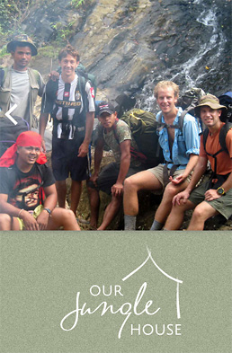</a><br>
						<font face="Arial" style="font-size: 12px" color="#666666">
						------------Spronsor support-----------</font></p>
								</td>
					</tr>
					<tr>
						<td align="left" valign="top" colspan="2">
						<font face="Arial" style="font-size: 14px"> 
						Khao Sok National Park are one of Asia�s premier natural 
						wonders. Khao Sok stretches over some 646 square kms and 
						is part of a greater protected area that also includes 
						Kaeng Krung and Phang Nga national parks and Khlong 
						Nakha and Khlong Saen wildlife sanctuaries. Spanning 
						over 4,000 square km between them, this is a massive 
						protected area in Thailand, and on a map it looks like 
						an entire province of nothing but lakes, rivers, and 
						jungle. If you�re going to visit only one national park 
						in Thailand, Khao Sok is arguably your best choice.</font></td>
					</tr>
					<tr>
						<td align="left" valign="top" colspan="2">
						<table border="0" width="100%" cellspacing="0" cellpadding="0" bgcolor="#C0C0C0" bordercolorlight="#C0C0C0" bordercolordark="#C0C0C0">
							<tr>
								<td bgcolor="#F4AD06">
								<p align="center">
								<span style="font-weight: 700">
								<font face="Arial Narrow" style="font-size: 18px">
								Khao Sok Photo of Week</font></span></td>
							</tr>
						</table>
						</td>
					</tr>
					<tr>
						<td align="left" valign="top" colspan="2">
						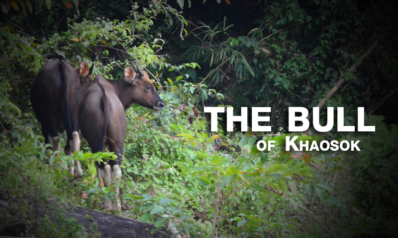</td>
					</tr>
					<tr>
						<td align="left" valign="top" colspan="2">
						<p align="center">
						<font face="Arial" color="#00201A" style="font-size: 14px; font-weight: 700">
						The Bull of Khaosok </font>
						<font face="Arial" style="font-size: 11px" color="#00201A">
						: Photo By Rachada Srepaotong</font></td>
					</tr>
					<tr>
						<td align="left" valign="top" colspan="2">
						<hr></td>
					</tr>
					<tr>
						<td align="left" valign="top" colspan="2">
						<span style="font-weight: 700">
								<font face="Arial Narrow" style="font-size: 26px">
						Khao Sok Tours &amp; Overnight Package</font></span><hr size="4" noshade color="#F4AD06" width="380" align="left"></td>
					</tr>
					<tr>
						<td align="left" valign="top" colspan="2">
						<font face="Tahoma" style="font-size: 13px">THE OLDEST 
						EVERGREEN RAINFOREST IN THE WORLD AND SOUTHERN 
						THAILAND�S LARGEST AREA OF PROTECTED PARKLAND, KHAO SOK 
						NATIONAL PARK IS CERTAINLY ONE OF THE HIDDEN WONDERS OF 
						THIS WORLD.<br>
						Khao Sok 
						National Park is a nature reserve in southern Thailand 
						containing dense virgin jungle, towerlike limestone 
						karst formations and the man-made Cheow Lan Lake. </font></td>
					</tr>
					<tr>
						<td align="left" valign="top" colspan="2">
						<iframe width="768" height="432" amp-video src="https://www.youtube.com/embed/caT2wOkzhY0?amp;autoplay=1&amp;loop=1&amp;playlist=caT2wOkzhY0" frameborder="0" allowfullscreen></iframe></td>
					</tr>
					<tr>
						<td align="left" valign="top" background="qqqqeqeqee.jpg" colspan="2">
						<font face="Arial" style="font-size: 13px">Khao Sok 
						Rafting Expedition is one of our most popular Khao Sok 
						tours. Spend a relaxing day gently floating down the Sok 
						River on a Bamboo raft followed by Elephant Trekking in 
						the afternoon. Khao Sok Lake Explorer is the second day 
						trip available. This encompasses both rafting along Sok 
						River in the morning and a longtail boat ride through 
						the majestic Cheow Lan Lake (Khao Sok Lake) in the 
						afternoon. Khao Sok day trips are suitable for those who 
						are short of time, but would still like to visit our 
						famous National Park.</font></td>
					</tr>
					<tr>
						<td align="left" valign="top" colspan="2" bgcolor="#FFFFFF">
						<table border="0" width="100%" cellspacing="8" cellpadding="0">
							<tr>
								<td width="33%">
								<a href="Khao-Sok-Bamboo-Rafting.html">
								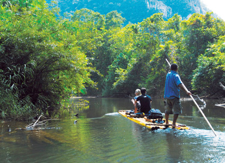</a></td>
								<td width="33%">
								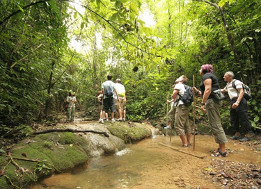</td>
								<td width="33%">
								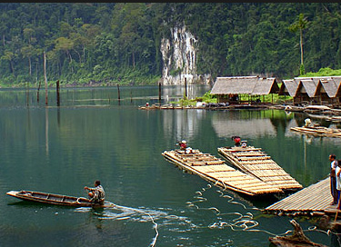</td>
							</tr>
							<tr>
								<td align="left" valign="top" width="33%">
								<font face="Arial" style="font-size: 16px; font-weight: 700">
								Day Trip</font><font color="#008000" face="Arial" style="font-size: 13px"><b><a href="contact.html"></a></b></font><font face="Arial" style="font-size: 16px; font-weight: 700"><br>
								Khao Sok Raft Expedition</font><p>
								<font face="Arial" style="font-size: 13px">If 
								you are looking for travel adventures and want 
								to see some of Thailand�s tropical rainforests 
								then jump aboard this trip with Khaosok Tourism.</font></p>
								<p>
								<font color="#008000" face="Arial" style="font-size: 13px">
								<b>Price : Adult 2900 THB&nbsp; <br>
								Child 1600</b></font></td>
								<td align="left" valign="top" width="33%">
								<font face="Arial" style="font-size: 16px">
								<span style="font-weight: 700">2 days 1 night
								</span>
								<b>Trip</b></font><font color="#008000" face="Arial" style="font-size: 13px"><b><a href="contact.html"></a></b></font><font face="Arial" style="font-size: 16px"><span style="font-weight: 700"><br>
								Khao Sok Discovery</span></font><p>
								<font face="Arial" style="font-size: 13px">This 
								highly recommended trip combines the best 
								aspects of the National Park with a visit to the 
								beautiful Khao Sok Lake too.</font></p>
								<p>
								<font color="#008000" face="Arial" style="font-size: 13px">
								<b>Price : Adult 6000 THB&nbsp; 
								<br>
								Child 4300 THB</b></font></td>
								<td align="left" valign="top" width="33%">
								<font face="Arial" style="font-size: 16px"><b>2 
								days 1 night Trip</b></font><font color="#008000" face="Arial" style="font-size: 13px"><b><a href="contact.html"></a></b></font><font face="Arial" style="font-size: 16px"><b><br>
								Lake Explorer</b></font><p>
								<font face="Arial" style="font-size: 13px">This 
								Khao Sok Jungle and Lake Exploration tour is 
								specially designed for the nature-lover and 
								those looking for the best adventures.
								</font></p>
								<p>
								<font face="Arial" style="font-size: 13px" color="#008000">
								<b>Price : Adult 6500 THB&nbsp; <br>
								Child 4400 THB</b></font></td>
							</tr>
							<tr>
								<td width="33%">
								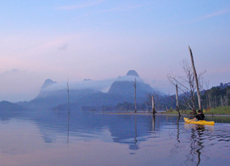</td>
								<td width="33%">
								<a href="http://www.booking.com/hotel/th/khaosok-boutique-camps.html?aid=1307406&no_rooms=1&group_adults=1" style="color: #FFFFFF; text-decoration: none">
								</a></td>
								<td width="33%">
								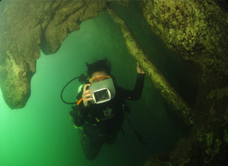</td>
							</tr>
							<tr>
								<td align="left" valign="top" width="33%">
								<font face="Arial" style="font-size: 16px; font-weight: 700">
								3 days 2 nights Trip</font><font color="#008000" face="Arial" style="font-size: 13px"><b><a href="contact.html"></a></b></font><font face="Arial" style="font-size: 16px; font-weight: 700"><br>
								Khaosok &amp; Cheow Lan Lake Discovery</font><p>
								<font face="Arial" style="font-size: 13px">
								Khaosok Tourism is pleased to be the booking 
								agent for Thailand Kayak. </font></p>
								<p>
								<font color="#008000" face="Arial" style="font-size: 13px">
								<b>Price : Adult 12500 THB&nbsp;<br>
								Child 8500 THB</b></font></td>
								<td align="left" valign="top" width="33%">
								<font face="Arial" style="font-size: 16px; font-weight: 700">
								3 days 2 nights Trip</font><font color="#008000" face="Arial" style="font-size: 13px"><b><a href="contact.html"></a></b></font><font face="Arial" style="font-size: 16px; font-weight: 700"><br>
								</font><b>
								<font face="Arial" style="font-size: 16px">
								jungle&amp;lake safari Overnight : Khao Sok Boutique 
								Camps</font></b><p>
								<font face="Tahoma" style="font-size: 13px">Khao 
								Sok Discovery Camp The River Gallery is a 
								boutique hotel with a choice of locations on the 
								mountain. And combined with the beauty of 
								nature. The most beautiful scenery. As well as 
								the natural one. A breath of fresh air to fill 
								the lungs with us here. Khao Sok Discovery Camp 
								The Boutique.</font></p>
								<p>
								<font face="Arial" style="font-size: 13px" color="#008000">
								<b>Price : Adult 11500 THB&nbsp;<br>
								Child 7800 THB</b></font></td>
								<td align="left" valign="top" width="33%">
								<b>
								<font face="Arial" style="font-size: 16px">Fullday Trip</font></b><font color="#008000" face="Arial" style="font-size: 13px"><b><a href="contact.html"></a></b></font><b><font face="Arial" style="font-size: 16px"><br>
								Khao Sok Lake Diving <br>
								Uncovered</font></b><p>
								<font face="Arial" style="font-size: 13px">Khao 
								Sok jungle and Cheow Lan Lake are beautiful 
								locations in the National Park; the jungle can 
								be explored on foot, by elephant or bamboo raft 
								and the lake can be seen from the comfort of a 
								longtail boat or from beneath on a scuba dive.</font></p>
								<p>
								<font face="Arial" style="font-size: 13px" color="#008000">
								<b>Price : Adult 10000 THB&nbsp; </b></font>
								</td>
							</tr>
							<tr>
								<td width="33%">
								<a href="khaosok-tour-2days1nightcamping.html">
								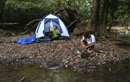</a></td>
								<td width="33%">
								<a href="khaosok-tour-jungletrek.html">
								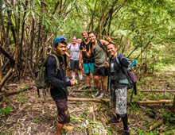</a></td>
								<td width="33%">
								<a href="khaosok-tour-cheowlan.html">
								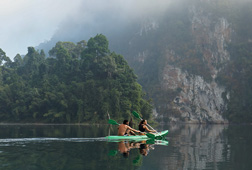</a></td>
							</tr>
							<tr>
								<td width="33%" align="left" valign="top">
								<p style="font-size: 16px; font-weight: normal; line-height: normal; font-family: Arial; font-style: normal; font-variant-ligatures: normal; font-variant-caps: normal; letter-spacing: normal; orphans: 2; text-align: left; text-indent: 0px; text-transform: none; white-space: normal; widows: 2; word-spacing: 0px; -webkit-text-stroke-width: 0px; text-decoration-style: initial; text-decoration-color: initial; margin-left: 0px; margin-right: 0px; margin-top: 0px; margin-bottom: 15px; padding: 0px; background-color: rgb(255, 255, 255)">
								<strong>2 Days / 1 night </strong><font color="#008000" face="Arial" style="font-size: 13px"><b><a href="contact.html">
								</a></b></font><strong><br>
								Camping Khao Sok</strong></p>
								<p style="font-family: Tahoma; font-size: 13px; font-style: normal; font-variant-ligatures: normal; font-variant-caps: normal; font-weight: normal; letter-spacing: normal; orphans: 2; text-align: left; text-indent: 0px; text-transform: none; white-space: normal; widows: 2; word-spacing: 0px; -webkit-text-stroke-width: 0px; text-decoration-style: initial; text-decoration-color: initial; background-color: rgb(255, 255, 255)">
								Highly recommended 
								tour. We will camp at the Ton Gloy Waterfall in 
								Khao Sok National Park. Early morning, round 9 
								am we start trekking in the rainforest. You will 
								get the chance to see the true inside of Khao 
								Sok Rainforest with all its flowers, plants, 
								trees and animals. On the trees you will see 
								many plants attached to the trees...</p>
								<p style="font-family: Tahoma; font-size: 13px; font-style: normal; font-variant-ligatures: normal; font-variant-caps: normal; font-weight: normal; letter-spacing: normal; orphans: 2; text-align: left; text-indent: 0px; text-transform: none; white-space: normal; widows: 2; word-spacing: 0px; -webkit-text-stroke-width: 0px; text-decoration-style: initial; text-decoration-color: initial; background-color: rgb(255, 255, 255)">
								<font face="Arial" style="font-size: 13px" color="#008000">
								<b>Price : Adult 4200 THB</b></font></p>
								<p>
								&nbsp;</td>
								<td width="33%" align="left" valign="top">
								<p style="font-size: 16px; font-weight: normal; line-height: normal; font-family: Arial; font-style: normal; font-variant-ligatures: normal; font-variant-caps: normal; letter-spacing: normal; orphans: 2; text-align: left; text-indent: 0px; text-transform: none; white-space: normal; widows: 2; word-spacing: 0px; -webkit-text-stroke-width: 0px; text-decoration-style: initial; text-decoration-color: initial; margin-left: 0px; margin-right: 0px; margin-top: 0px; margin-bottom: 15px; padding: 0px; background-color: rgb(255, 255, 255)">
								<strong>Half day or 1 day </strong><font color="#008000" face="Arial" style="font-size: 13px"><b><a href="contact.html">
								</a></b></font><strong><br>
								Jungle trek</strong></p>
								<p style="font-family: Arial; font-size: 13px; font-style: normal; font-variant-ligatures: normal; font-variant-caps: normal; font-weight: normal; letter-spacing: normal; orphans: 2; text-align: left; text-indent: 0px; text-transform: none; white-space: normal; widows: 2; word-spacing: 0px; -webkit-text-stroke-width: 0px; text-decoration-style: initial; text-decoration-color: initial; background-color: rgb(255, 255, 255)">
								Trek through Khao 
								Sok National Park with experienced guides. You 
								can choose between a mountain trek or a water 
								(river) trek. The guides have a lot of 
								knowledge, beeing local of Khao Sok. They have 
								walked the jungle trails many times, and have a 
								lot of knowledge of the plants, trees and 
								animals...</p>
								<p style="font-family: Arial; font-size: 13px; font-style: normal; font-variant-ligatures: normal; font-variant-caps: normal; font-weight: normal; letter-spacing: normal; orphans: 2; text-align: left; text-indent: 0px; text-transform: none; white-space: normal; widows: 2; word-spacing: 0px; -webkit-text-stroke-width: 0px; text-decoration-style: initial; text-decoration-color: initial; background-color: rgb(255, 255, 255)">
								<font face="Arial" style="font-size: 13px" color="#008000">
								<b>Price : Adult 1400 THB</b></font></p></td>
								<td width="33%" align="left" valign="top">
								<p style="font-size: 16px; font-weight: normal; line-height: normal; font-family: Arial; font-style: normal; font-variant-ligatures: normal; font-variant-caps: normal; letter-spacing: normal; orphans: 2; text-align: left; text-indent: 0px; text-transform: none; white-space: normal; widows: 2; word-spacing: 0px; -webkit-text-stroke-width: 0px; text-decoration-style: initial; text-decoration-color: initial; margin-left: 0px; margin-right: 0px; margin-top: 0px; margin-bottom: 15px; padding: 0px; background-color: rgb(255, 255, 255)">
								<strong>Cheow Lan Lake</strong><font color="#008000" face="Arial" style="font-size: 13px"><b><a href="contact.html"></a></b></font><strong><br>
								Full day</strong></p>
								<p style="font-family: Tahoma; font-size: 13px; font-style: normal; font-variant-ligatures: normal; font-variant-caps: normal; font-weight: normal; letter-spacing: normal; orphans: 2; text-align: left; text-indent: 0px; text-transform: none; white-space: normal; widows: 2; word-spacing: 0px; -webkit-text-stroke-width: 0px; text-decoration-style: initial; text-decoration-color: initial; background-color: rgb(255, 255, 255)">
								Highly recommended 
								tour at Cheow Lan Lake. 1 hour by car to 
								Rajaprabada Dam and 1 hour by longtail boat. The 
								Dam was build about 22 years ago and created 
								Cheow Lan Lake. The Dam produces hydro power and 
								supplies many villages in the south from 
								electricity.
								On Cheow Lan Lake we arrive at Tone leuy 
								Rafthouses ...</p>
								<p style="font-family: Tahoma; font-size: 13px; font-style: normal; font-variant-ligatures: normal; font-variant-caps: normal; font-weight: normal; letter-spacing: normal; orphans: 2; text-align: left; text-indent: 0px; text-transform: none; white-space: normal; widows: 2; word-spacing: 0px; -webkit-text-stroke-width: 0px; text-decoration-style: initial; text-decoration-color: initial; background-color: rgb(255, 255, 255)">
								<font face="Arial" style="font-size: 13px" color="#008000">
								<b>Price : Adult 2500 THB</b></font></p>
								</td>
							</tr>
							<tr>
								<td width="33%" align="left" valign="top">
								<a href="khaosok-tour-tubing.html">
								</a></td>
								<td width="33%" align="left" valign="top">
								<a href="khaosok-tour-elephanttrekking.html">
								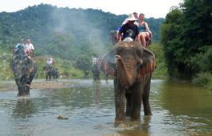</a></td>
								<td width="33%" align="left" valign="top">
								<a href="khaosok-tour-canoe.html">
								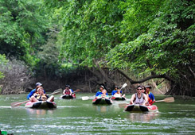</a></td>
							</tr>
							<tr>
								<td width="33%" align="left" valign="top">
								<h3 style="font-size: 16px; font-weight: normal; line-height: normal; font-family: Arial; font-style: normal; font-variant-ligatures: normal; font-variant-caps: normal; letter-spacing: normal; orphans: 2; text-align: left; text-indent: 0px; text-transform: none; white-space: normal; widows: 2; word-spacing: 0px; -webkit-text-stroke-width: 0px; text-decoration-style: initial; text-decoration-color: initial; margin-left: 0px; margin-right: 0px; margin-top: 0px; margin-bottom: 15px; padding: 0px; background-color: rgb(255, 255, 255)">
								<strong>Tubing on the Sok River</strong><font color="#008000" face="Arial" style="font-size: 13px"><b><a href="contact.html"></a></b></font></h3>
								<p style="font-family: Tahoma; font-size: 13px; font-style: normal; font-variant-ligatures: normal; font-variant-caps: normal; font-weight: normal; letter-spacing: normal; orphans: 2; text-align: left; text-indent: 0px; text-transform: none; white-space: normal; widows: 2; word-spacing: 0px; -webkit-text-stroke-width: 0px; text-decoration-style: initial; text-decoration-color: initial; background-color: rgb(255, 255, 255)">
								Very relaxed and very fun way to see Khao Sok ! 
								While tubbing (letting yourself float downstream 
								the Sok River in a rubber tyre) you can see the 
								natural beauty of Khao Sok. You might spot early 
								morning or late afternoon Macaque monkeys...</p>
								<p style="font-family: Tahoma; font-size: 13px; font-style: normal; font-variant-ligatures: normal; font-variant-caps: normal; font-weight: normal; letter-spacing: normal; orphans: 2; text-align: left; text-indent: 0px; text-transform: none; white-space: normal; widows: 2; word-spacing: 0px; -webkit-text-stroke-width: 0px; text-decoration-style: initial; text-decoration-color: initial; background-color: rgb(255, 255, 255)">
								<font face="Arial" style="font-size: 13px" color="#008000">
								<b>Price : Adult 800 THB&nbsp; </b></font>
								</p>
								</td>
								<td width="33%" align="left" valign="top">
								<h3 style="font-size: 16px; font-weight: normal; line-height: normal; font-family: Arial; font-style: normal; font-variant-ligatures: normal; font-variant-caps: normal; letter-spacing: normal; orphans: 2; text-align: left; text-indent: 0px; text-transform: none; white-space: normal; widows: 2; word-spacing: 0px; -webkit-text-stroke-width: 0px; text-decoration-style: initial; text-decoration-color: initial; margin-left: 0px; margin-right: 0px; margin-top: 0px; margin-bottom: 15px; padding: 0px; background-color: rgb(255, 255, 255)">
								<strong>Elephant Trekking</strong><font color="#008000" face="Arial" style="font-size: 13px"><b><a href="contact.html"></a></b></font></h3>
								<p style="font-family: Tahoma; font-size: 13px; font-style: normal; font-variant-ligatures: normal; font-variant-caps: normal; font-weight: normal; letter-spacing: normal; orphans: 2; text-align: left; text-indent: 0px; text-transform: none; white-space: normal; widows: 2; word-spacing: 0px; -webkit-text-stroke-width: 0px; text-decoration-style: initial; text-decoration-color: initial; background-color: rgb(255, 255, 255)">
								Experience the rainforest from the back of your 
								elephant, one of world's most gentle animals. 
								Our elephant camp is just 15 min. (by car) away. 
								The tour will take you through rubber 
								plantations, rainforest, freshwater streams and 
								a waterfall...</p>
								<p style="font-family: Tahoma; font-size: 13px; font-style: normal; font-variant-ligatures: normal; font-variant-caps: normal; font-weight: normal; letter-spacing: normal; orphans: 2; text-align: left; text-indent: 0px; text-transform: none; white-space: normal; widows: 2; word-spacing: 0px; -webkit-text-stroke-width: 0px; text-decoration-style: initial; text-decoration-color: initial; background-color: rgb(255, 255, 255)">
								<font face="Arial" style="font-size: 13px" color="#008000">
								<b>Price : Adult 900 THB&nbsp; </b></font>
								</p>
								</td>
								<td width="33%" align="left" valign="top">
								<h3 style="font-size: 16px; font-weight: normal; line-height: normal; font-family: Arial; font-style: normal; font-variant-ligatures: normal; font-variant-caps: normal; letter-spacing: normal; orphans: 2; text-align: left; text-indent: 0px; text-transform: none; white-space: normal; widows: 2; word-spacing: 0px; -webkit-text-stroke-width: 0px; text-decoration-style: initial; text-decoration-color: initial; margin-left: 0px; margin-right: 0px; margin-top: 0px; margin-bottom: 15px; padding: 0px; background-color: rgb(255, 255, 255)">
								<strong>Canoeing on the Sok River</strong><font color="#008000" face="Arial" style="font-size: 13px"><b><a href="contact.html"></a></b></font>Canoeing is a very relaxing way to see Khao Sok 
								from a different side. Our experienced English 
								speaking guide take you on a canoe safari aong 
								the Sok River. Genlty following the river you 
								can see the natural beauty of Khao Sok, the 
								evergreen...</h3>
								<p style="font-family: Tahoma; font-size: 13px; font-style: normal; font-variant-ligatures: normal; font-variant-caps: normal; font-weight: normal; letter-spacing: normal; orphans: 2; text-align: left; text-indent: 0px; text-transform: none; white-space: normal; widows: 2; word-spacing: 0px; -webkit-text-stroke-width: 0px; text-decoration-style: initial; text-decoration-color: initial; background-color: rgb(255, 255, 255)">
								<font face="Arial" style="font-size: 13px" color="#008000">
								<b>Price : Adult 1200 THB&nbsp; </b></font>
								</p>
								</td>
							</tr>
						</table>
						</td>
					</tr>
					<tr>
						<td align="left" valign="top" colspan="2">
						<a href="khaosok-national-park.html" style="color: #FFFFFF; text-decoration: none">
						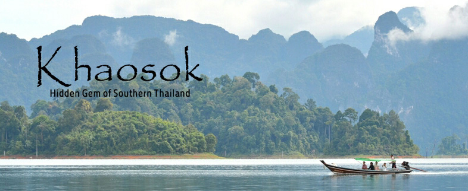</a></td>
					</tr>
					<tr>
						<td align="left" valign="top" background="qqqqeqeqee.jpg" colspan="2">
						<font face="Arial" style="font-size: 18px" color="#336600"><b>
						Khao Sok national park</b></font><br>
						<font face="Tahoma" style="font-size: 13px">(Thai: ��ʡ) 
						is located in Surat Thani province in Thailand. Its land 
						area is 739 km&sup2;, and it includes the Chiao Lan reservoir 
						dammed by the Ratchaprabha dam. The park comprises the 
						largest area of virgin forest in Southern Thailand and 
						is a remnant of rainforest which is older and more 
						diverse than the Amazon Rainforest. The wild mammals 
						include, Malayan Tapir, Asian Elephant, Tiger, Sambar 
						Deer, Bear, Guar, Banteng, Serow, Wild Boar, Pig Tailed 
						Macaque, Langur, White handed Gibbon, Squirrel, Muntjak 
						and Mouse Deer.</font></td>
					</tr>
					<tr>
						<td align="left" valign="top" colspan="2">
						<a href="khaosok-Rafflessia.html" style="color: #FFFFFF; text-decoration: none">
						</a></td>
					</tr>
					<tr>
						<td align="left" valign="top" background="qqqqeqeqee.jpg" colspan="2">
						<b>
						<font face="Arial Narrow" style="font-size: 22px" color="#006600">
						Raffleasia </font></b><font face="Arial" style="font-size: 13px" color="#666666"><br>
						</font><font face="Arial" style="font-size: 13px">
						Rafflesia is a parasitic plant with no leaves or roots 
						on its own. It invades the liana vines and like a 
						parasite, it absorbs all the vine's nutrients.Once a 
						year small buds begin to develop beneath the root bark 
						of the vine. As they mature, they swell, breaking 
						through the bark, to the size of a football. They then 
						burst open revealing the massive flower, which can be up 
						to 80 cm. in diameter and is ocra, yellow, chesnut and 
						white in colour.</font></td>
					</tr>
					<tr>
						<td align="left" valign="top" colspan="2">
						<a href="khaosok-widelife.html" style="color: #FFFFFF; text-decoration: none">
						</a></td>
					</tr>
					<tr>
						<td align="left" valign="top" background="qqqqeqeqee.jpg" colspan="2">
						<b>
						<font face="Arial Narrow" style="font-size: 22px" color="#006600">
						Wildlife of Khao Sok National Park</font><font face="Tahoma"><span style="font-size: 13px"><br>
						</span></font></b>
						<font face="Arial" style="font-size: 13px">The park 
						covers an area of over 120,000 hectares of mostly virgin 
						rainforest. There is plenty of wildlife in the park, 
						although depending on the time of day it can be quite 
						elusive, but your knowledgeable guide will help spot 
						species such as gibbons and hornbills.</font></td>
					</tr>
					<tr>
						<td align="left" valign="top" colspan="2">
						<a href="khaosok-flower-plants.html" style="color: #FFFFFF; text-decoration: none">
						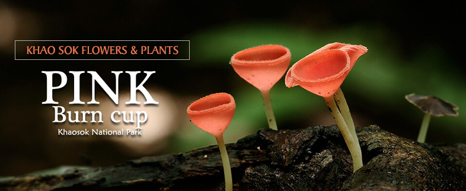</a></td>
					</tr>
					<tr>
						<td align="left" valign="top" background="qqqqeqeqee.jpg" colspan="2">
						<font color="#006600"><b>
						<font face="Arial Narrow">
						<span style="font-size: 22px">Khao Sok
						</span></font></b></font><b>
						<font face="Arial Narrow" style="font-size: 22px" color="#006600">
						Flowers &amp; Plants<br>
						</font></b><font face="Arial" style="font-size: 13px">
						Khao Sok is rich with fruit and vegetation. It boasts 
						approximately 200 different floral species per hectare 
						including a wide variety of orchids and the World�s 
						largest flower, Rafflesia.</font></td>
					</tr>
					<tr>
						<td align="left" valign="top" colspan="2">
						<a href="khaosok-birds.html" style="color: #FFFFFF; text-decoration: none">
						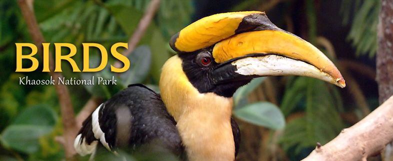</a></td>
					</tr>
					<tr>
						<td align="left" valign="top" background="qqqqeqeqee.jpg" colspan="2">
						<font color="#006600"><b>
						<font face="Arial">
						<span style="font-size: 22px">Birds in Khao Sok National 
						Park</span><span style="font-size: 27px"><br>
						</span></font></b></font>
						<font face="Arial" style="font-size: 13px">Khao Sok is 
						famous for its wildlife. Especially a large variety of 
						birds can be found here. For example: Sunbirds, chesnut- 
						headed Bee eater, comon kingfisher, Olive Rudy 
						kingfisher, Osprey Eagle, Brahminy Kite, Great Hornbill 
						and much more.</font><p>&nbsp;</td>
					</tr>
					<tr>
						<td align="left" valign="top" colspan="2">
						<table class="table table--url-constructor-list dataTable no-footer" id="js--filtertable" role="grid" aria-describedby="js--filtertable_info" style="box-sizing: border-box; border-spacing: 0px; max-width: none !important; clear: both; color: rgb(51, 51, 51); font-family: BlinkMacSystemFont, -apple-system, 'Segoe UI', Roboto, Helvetica, Arial, sans-serif; font-size: 14px; font-style: normal; font-variant-ligatures: normal; font-variant-caps: normal; font-weight: normal; letter-spacing: normal; orphans: 2; text-align: start; text-indent: 0px; text-transform: none; white-space: normal; widows: 2; word-spacing: 0px; -webkit-text-stroke-width: 0px; text-decoration-style: initial; text-decoration-color: initial; border-left-style: solid; border-left-width: 0; border-right-style: solid; border-right-width: 0; border-top-style: solid; border-bottom-style: solid; border-bottom-width: 0; margin-top: 6px !important; margin-bottom: 6px !important" width="100%">
							<tbody style="box-sizing: border-box;">
								<tr role="row" class="odd" style="box-sizing: border-box; background-color: rgb(245, 245, 245);">
									<td style="box-sizing: content-box; line-height: 1.42857; vertical-align: top; border-top-style: solid; border-top-width: 1px; padding-left: 18px; padding-right: 8px; padding-top: 8px; padding-bottom: 8px; background-color: #000000" width="100%" colspan="2">
						<span style="font-weight: 700">
								<font face="Arial Narrow" style="font-size: 20px" color="#FFFFFF">
									Khao Sok Hotels List 2018 -2019</font></span></td>
								</tr>
								<tr role="row" class="odd" style="box-sizing: border-box; background-color: rgb(245, 245, 245);">
									<td style="box-sizing: content-box; line-height: 1.42857; vertical-align: top; border-top-style: solid; border-top-width: 1px; padding-left: 18px; padding-right: 8px; padding-top: 8px; padding-bottom: 8px" width="50%">
									<ul>
										<li>
										<a href="http://www.booking.com/hotel/th/khao-sok-river-home-resort.html?aid=1307406&no_rooms=1&group_adults=1" style="text-decoration: none; color:#FFFFFF">
										<font color="#000000">Khao Sok River 
										Home Resort</font></a></li>
										<li>
										<a href="http://www.booking.com/hotel/th/khao-sok-country-resort.html?aid=1307406&no_rooms=1&group_adults=1" style="text-decoration: none; color:#FFFFFF">
										<font color="#000000">Khao Sok Country 
										Resort</font></a></li>
										<li>
										<a href="http://www.booking.com/hotel/th/500-rai-floating-resort.html?aid=1307406&no_rooms=1&group_adults=1" style="text-decoration: none; color:#FFFFFF">
										<font color="#000000">500 Rai Floating 
										Resort</font></a></li>
										<li>
										<a href="http://www.booking.com/hotel/th/khaosok-resort.html?aid=1307406&no_rooms=1&group_adults=1" style="text-decoration: none; color:#FFFFFF">
										<font color="#000000">Khaosok Resort</font></a></li>
										<li>
										<a href="http://www.booking.com/hotel/th/monkey-mansion.html?aid=1307406&no_rooms=1&group_adults=1" style="text-decoration: none; color:#FFFFFF">
										<font color="#000000">Monkey Mansion 
										Bungalows</font></a></li>
										<li>
										<a href="http://www.booking.com/hotel/th/resort-phunawa.html?aid=1307406&no_rooms=1&group_adults=1" style="text-decoration: none; color:#FFFFFF">
										<font color="#000000">Resort Phunawa 
										Citypark</font></a></li>
										<li>
										<a href="http://www.booking.com/hotel/th/khao-sok-jasmine-garden-resort.html?aid=1307406&no_rooms=1&group_adults=1" style="text-decoration: none; color:#FFFFFF">
										<font color="#000000">Khao Sok Jasmine 
										Garden Resort</font></a></li>
										<li>
										<a href="http://www.booking.com/hotel/th/khao-sok-palmthong-garden-resort.html?aid=1307406&no_rooms=1&group_adults=1" style="text-decoration: none; color:#FFFFFF">
										<font color="#000000">Khao Sok Palm 
										Garden Resort</font></a></li>
										<li>
										<a href="http://www.booking.com/hotel/th/junghut-resort.html?aid=1307406&no_rooms=1&group_adults=1" style="text-decoration: none; color:#FFFFFF">
										<font color="#000000">Jungle Huts Resort</font></a></li>
										<li>
										<a href="http://www.booking.com/hotel/th/khao-sok-thara.html?aid=1307406&no_rooms=1&group_adults=1" style="text-decoration: none; color:#FFFFFF">
										<font color="#000000">Khao Sok Thara</font></a></li>
										<li>
										<a href="http://www.booking.com/hotel/th/khao-sok-horizon.html?aid=1307406&no_rooms=1&group_adults=1" style="text-decoration: none; color:#FFFFFF">
										<font color="#000000">Khao Sok Horizon</font></a></li>
										<li>
										<a href="http://www.booking.com/hotel/th/khao-sok-blue-mountain.html?aid=1307406&no_rooms=1&group_adults=1" style="text-decoration: none; color:#FFFFFF">
										<font color="#000000">Khao Sok Blue 
										Mountain</font></a></li>
										<li>
										<a href="http://www.booking.com/hotel/th/khaosok-boutique-camps.html?aid=1307406&no_rooms=1&group_adults=1" style="text-decoration: none; color:#FFFFFF">
										<font color="#000000">Khaosok Boutique 
										Camps</font></a></li>
										<li>
										<a href="http://www.booking.com/hotel/th/art-39-s-riverview-lodge.html?aid=1307406&no_rooms=1&group_adults=1" style="text-decoration: none; color:#FFFFFF">
										<font color="#000000">Art's Riverview 
										Lodge</font></a></li>
										<li>
										<a href="http://www.booking.com/hotel/th/ekhaaskohmsety.html?aid=1307406&no_rooms=1&group_adults=1" style="text-decoration: none; color:#FFFFFF">
										<font color="#000000">Khaosok Homestay 
										Resort</font></a></li>
										<li>
										<a href="http://www.booking.com/hotel/th/baandin-chiewlarn-ban-tha-khun.html?aid=1307406&no_rooms=1&group_adults=1" style="text-decoration: none; color:#FFFFFF">
										<font color="#000000">Baandin Chiewlarn</font></a></li>
										<li>
										<a href="http://www.booking.com/hotel/th/khao-sok-silver-cliff-resort.html?aid=1307406&no_rooms=1&group_adults=1" style="text-decoration: none; color:#FFFFFF">
										<font color="#000000">Khao Sok Silver 
										Cliff Resort</font></a></li>
										<li>
										<a href="http://www.booking.com/hotel/th/panvaree-resort.html?aid=1307406&no_rooms=1&group_adults=1" style="text-decoration: none; color:#FFFFFF">
										<font color="#000000">Panvaree Resort</font></a></li>
										<li>
										<a href="http://www.booking.com/hotel/th/anurak-community-lodge.html?aid=1307406&no_rooms=1&group_adults=1" style="text-decoration: none; color:#FFFFFF">
										<font color="#000000">Anurak Community 
										Lodge</font></a></li>
										<li>
										<a href="http://www.booking.com/hotel/th/khao-sok-river-lodge.html?aid=1307406&no_rooms=1&group_adults=1" style="text-decoration: none; color:#FFFFFF">
										<font color="#000000">Khao Sok River 
										Lodge</font></a></li>
										<li>
										<a href="http://www.booking.com/hotel/th/bannmai-resort.html?aid=1307406&no_rooms=1&group_adults=1" style="text-decoration: none; color:#FFFFFF">
										<font color="#000000">Khao Sok Royal 
										Cliff Resort &amp; Spa</font></a></li>
										<li>
										<a href="http://www.booking.com/hotel/th/bantatuk-resort-amp-restaurent.html?aid=1307406&no_rooms=1&group_adults=1" style="text-decoration: none; color:#FFFFFF">
										<font color="#000000">Bantatuk Resort &amp; 
										Restaurant</font></a></li>
										<li>
										<a href="http://www.booking.com/hotel/th/nung-house-khao-sok.html?aid=1307406&no_rooms=1&group_adults=1" style="text-decoration: none; color:#FFFFFF">
										<font color="#000000">Nung House Khao 
										Sok</font></a></li>
										<li>
										<a href="http://www.booking.com/hotel/th/khao-sok-hill-top-resort.html?aid=1307406&no_rooms=1&group_adults=1" style="text-decoration: none; color:#FFFFFF">
										<font color="#000000">Khao Sok Hill Top 
										Resort</font></a></li>
										<li>
										<a href="http://www.booking.com/hotel/th/khaosok-rainforest-resort.html?aid=1307406&no_rooms=1&group_adults=1" style="text-decoration: none; color:#FFFFFF">
										<font color="#000000">Khaosok Rainforest 
										Resort</font></a></li>
									</ul>
									</td>
									<td style="box-sizing: content-box; line-height: 1.42857; vertical-align: top; border-top-style: solid; border-top-width: 1px; padding-left: 18px; padding-right: 8px; padding-top: 8px; padding-bottom: 8px" width="50%">
									<ul>
										<li>
										<a href="http://www.booking.com/hotel/th/khao-sok-palmview-resort.html?aid=1307406&no_rooms=1&group_adults=1" style="text-decoration: none; color:#FFFFFF">
										<font color="#000000">Khao Sok Palmview 
										Resort</font></a></li>
										<li>
										<a href="http://www.booking.com/hotel/th/khao-sok-green-mountain-view.html?aid=1307406&no_rooms=1&group_adults=1" style="text-decoration: none; color:#FFFFFF">
										<font color="#000000">Khao Sok Green 
										Mountain View</font></a></li>
										<li>
										<a href="http://www.booking.com/hotel/th/khaosok-island-resort.html?aid=1307406&no_rooms=1&group_adults=1" style="text-decoration: none; color:#FFFFFF">
										<font color="#000000">Khaosok Island 
										Resort</font></a></li>
										<li>
										<a href="http://www.booking.com/hotel/th/khao-sok-holiday-resort.html?aid=1307406&no_rooms=1&group_adults=1" style="text-decoration: none; color:#FFFFFF">
										<font color="#000000">Khao Sok Holiday 
										Resort</font></a></li>
										<li>
										<a href="http://www.booking.com/hotel/th/khaosok-treehouse-resort.html?aid=1307406&no_rooms=1&group_adults=1" style="text-decoration: none; color:#FFFFFF">
										<font color="#000000">Khaosok Treehouse 
										Resort</font></a></li>
										<li>
										<a href="http://www.booking.com/hotel/th/khaosok-las-orquideas-resort.html?aid=1307406&no_rooms=1&group_adults=1" style="text-decoration: none; color:#FFFFFF">
										<font color="#000000">Khaosok Las 
										Orquideas Resort</font></a></li>
										<li>
										<a href="http://www.booking.com/hotel/th/bamboo-house.html?aid=1307406&no_rooms=1&group_adults=1" style="text-decoration: none; color:#FFFFFF">
										<font color="#000000">Bamboo House</font></a></li>
										<li>
										<a href="http://www.booking.com/hotel/th/khao-sok-jungle-resort.html?aid=1307406&no_rooms=1&group_adults=1" style="text-decoration: none; color:#FFFFFF">
										<font color="#000000">Khao Sok Jungle 
										Resort</font></a></li>
										<li>
										<a href="http://www.booking.com/hotel/th/the-khaosok-and-spa.html?aid=1307406&no_rooms=1&group_adults=1" style="text-decoration: none; color:#FFFFFF">
										<font color="#000000">The Hotel Khaosok 
										and Spa</font></a></li>
										<li>
										<a href="http://www.booking.com/hotel/th/coco-khao-sok-hostel.html?aid=1307406&no_rooms=1&group_adults=1" style="text-decoration: none; color:#FFFFFF">
										<font color="#000000">Coco Khao Sok 
										Hostel</font></a></li>
										<li>
										<a href="http://www.booking.com/hotel/th/khao-sok-green-valley-resort.html?aid=1307406&no_rooms=1&group_adults=1" style="text-decoration: none; color:#FFFFFF">
										<font color="#000000">Khao Sok Green 
										Valley Resort</font></a></li>
										<li>
										<a href="http://www.booking.com/hotel/th/rock-and-tree-house-resort.html?aid=1307406&no_rooms=1&group_adults=1" style="text-decoration: none; color:#FFFFFF">
										<font color="#000000">Rock and Tree 
										House Resort</font></a></li>
										<li>
										<a href="http://www.booking.com/hotel/th/khaosok-riverside-cottages.html?aid=1307406&no_rooms=1&group_adults=1" style="text-decoration: none; color:#FFFFFF">
										<font color="#000000">Khaosok Riverside 
										Cottages</font></a></li>
										<li>
										<a href="http://www.booking.com/hotel/th/khao-sok-hostel.html?aid=1307406&no_rooms=1&group_adults=1" style="text-decoration: none; color:#FFFFFF">
										<font color="#000000">Khao Sok Hostel</font></a></li>
										<li>
										<a href="http://www.booking.com/hotel/th/khao-sok-evergreen-resort.html?aid=1307406&no_rooms=1&group_adults=1" style="text-decoration: none; color:#FFFFFF">
										<font color="#000000">Khao Sok Evergreen 
										House</font></a></li>
										<li>
										<a href="http://www.booking.com/hotel/th/khao-sok-valley-lodge.html?aid=1307406&no_rooms=1&group_adults=1" style="text-decoration: none; color:#FFFFFF">
										<font color="#000000">Khao Sok Valley 
										Lodge</font></a></li>
										<li>
										<a href="http://www.booking.com/hotel/th/khao-sok-nature-place.html?aid=1307406&no_rooms=1&group_adults=1" style="text-decoration: none; color:#FFFFFF">
										<font color="#000000">Khao Sok Nature 
										Place</font></a></li>
										<li>
										<a href="http://www.booking.com/hotel/th/khao-sok-morning-mist-resort.html?aid=1307406&no_rooms=1&group_adults=1" style="text-decoration: none; color:#FFFFFF">
										<font color="#000000">Khao Sok Morning 
										Mist Resort</font></a></li>
										<li>
										<a href="http://www.booking.com/hotel/th/tree-tops-river-huts.html?aid=1307406&no_rooms=1&group_adults=1" style="text-decoration: none; color:#FFFFFF">
										<font color="#000000">Tree Tops River 
										Huts</font></a></li>
										<li>
										<a href="http://www.booking.com/hotel/th/khao-sok-bed-and-breakfast.html?aid=1307406&no_rooms=1&group_adults=1" style="text-decoration: none; color:#FFFFFF">
										<font color="#000000">Khao-Sok Bed and 
										Breakfast</font></a></li>
										<li>
										<a href="http://www.booking.com/hotel/th/khao-sok-cabana-resort.html?aid=1307406&no_rooms=1&group_adults=1" style="text-decoration: none; color:#FFFFFF">
										<font color="#000000">Khao Sok Cabana 
										Resort</font></a></li>
										<li>
										<a href="http://www.booking.com/hotel/th/khao-sok-chee-wa-lai-resort.html?aid=1307406&no_rooms=1&group_adults=1" style="text-decoration: none; color:#FFFFFF">
										<font color="#000000">Khao Sok Chee Wa 
										Lai Resort</font></a></li>
										<li>
										<a href="http://www.booking.com/hotel/th/khaosok-good-view-resort.html?aid=1307406&no_rooms=1&group_adults=1" style="text-decoration: none; color:#FFFFFF">
										<font color="#000000">Khaosok Good view 
										Resort</font></a></li>
										<li>
										<a href="http://www.booking.com/hotel/th/the-royal-bamboo-lodge.html?aid=1307406&no_rooms=1&group_adults=1" style="text-decoration: none; color:#FFFFFF">
										<font color="#000000">The Royal Bamboo 
										Lodge</font></a></li>
									</ul>
									</td>
								</tr>
						</table>
						</td>
					</tr>
					</table>
						</td>
					</tr>
				</table>
				</div>
<div align="center">
	<table border="0" width="997" cellspacing="0" cellpadding="0">
		<tr>
			<td><!--webbot bot="Include" U-Include="address.htm" TAG="BODY" startspan -->

				<div align="left">
					<table border="0" width="997" cellspacing="10" cellpadding="0" bgcolor="#2A2A2A" background="o7.jpg" height="565">
						<tr>
							<td valign="top">
						<div align="center">
							<table border="0" width="90%" cellspacing="10" cellpadding="0">
								<tr>
									<td>
									<font face="Arial" style="font-size: 16px; font-weight: 700" color="#EFEFEF">
									More Information</font></td>
									<td>&nbsp;</td>
									<td>
									<font color="#FFFFFF" face="Tahoma" style="font-size: 16px; font-weight: 700">
									On the ground</font></td>
									<td>&nbsp;</td>
								</tr>
								<tr>
									<td width="24%" align="left" valign="top">
									<font color="#FFFFFF" face="Tahoma" style="font-size: 15px">
									<a href="khaosok-national-park.html">
									<font color="#FFFFFF">khao Sok national park</font></a><br>
									<a href="khaosok-daytrip.html">
									<font color="#FFFFFF">khao Sok jungle tour</font></a><br>
									<a href="khaosok-hotel.html">
									<font color="#FFFFFF">khao Sok paradise resort</font></a><br>
									<a href="khaosok-travel-guide.html">
									<font color="#FFFFFF">khao Sok discovery</font></a><br>
									<a href="https://www.booking.com/hotel/th/khaosok-boutique-camps.html?aid=1307406&no_rooms=1&group_adults=1">
									<font color="#FFFFFF">khao Sok boutique camps</font></a><br>
									<a href="khaosok-travel-guide.html">
									<font color="#FFFFFF">khao Sok travel guide</font></a><br>
									<a href="https://www.booking.com/hotel/th/khaosok-treehouse-resort.html?aid=1307406&no_rooms=1&group_adults=1">
									<font color="#FFFFFF">khao Sok tree house resort</font></a><br>
									<a href="Khao-Sok-Bamboo-Rafting.html">
									<font color="#FFFFFF">Khao Sok Rafting</font></a><br>
									<a href="khaosok-location.html">
									<font color="#FFFFFF">Khao Sok Location</font></a><br>
									<a href="khaosok-national-park.html">
									<font color="#FFFFFF">Khao Sok Tourism</font></a></font></td>
									<td width="23%" align="left" valign="top">
									<font color="#FFFFFF" face="Tahoma" style="font-size: 15px">
									<a href="khaosok-waterfall.html">
									<font color="#FFFFFF">Khao Sok Waterfall</font></a><br>
									<a href="khaosok-national-park.html">
									<font color="#FFFFFF">Khao Sok Rainforest</font></a><br>
									<a href="khaosok-national-park.html">
									<font color="#FFFFFF">National Park</font></a><br>
									<a href="khaosok-ratchaprapha-dam.html">
									<font color="#FFFFFF">Ratchaprabha Dam</font></a><br>
									<a href="khaosok-flower-plants.html">
									<font color="#FFFFFF">Flowers &amp; Plants</font></a><br>
									<a href="khaosok-weather.html">
									<font color="#FFFFFF">Khao Sok Weather</font></a><br>
									<a href="khaosok-transfer.html">
									<font color="#FFFFFF">Khao Sok Transfer</font></a><br>
									<a href="khaosok-ratchaprapha-dam.html">
									<font color="#FFFFFF">cheow larn lake</font></a><br>
									<a href="khaosok-tour-jungletrek.html">
									<font color="#FFFFFF">our jungle house khao sok</font></a><br>
									<a href="khaosok-tour-jungletrek.html">
									<font color="#FFFFFF">our jungle camp</font></a></font></td>
									<td width="25%" align="left" valign="top">
									<font color="#FFFFFF" face="Tahoma" style="font-size: 15px">
									<a href="khaosok-attraction.html">
									<font color="#FFFFFF">Activities</font></a><br>
									<a href="khaosok-sleeping.html">
									<font color="#FFFFFF">Sleeping</font></a><br>
									<a href="khaosok-eating.html">
									<font color="#FFFFFF">Eating</font></a><br>
									Planning tools<br>
									<a href="Money-Costs-khaosok.html">
									<font color="#FFFFFF">Money and costs</font></a><br>
									<a href="Travel-with-Children.html">
									<font color="#FFFFFF">Travel with children</font></a><br>
									<a href="Gay-Lesbian-Travellers.html">
									<font color="#FFFFFF">Gay and lesbian 
									travelers</font></a><br>
									<a href="Disabilities.html">
									<font color="#FFFFFF">Travel with 
									disabilities</font></a><br>
&nbsp;</font></td>
									<td width="25%" align="left" valign="top">
									<font color="#FFFFFF" face="Tahoma" style="font-size: 15px">
									<a href="Formalities.html">
									<font color="#FFFFFF">Entry and exit 
									formalities</font></a><br>
									<a href="KhaoSok-Planningtips.html">
									<font color="#FFFFFF">Planning tips</font></a><br>
									Practical information<br>
									<a href="Flights-gettingthere.html">
									<font color="#FFFFFF">Flights and getting 
									there</font></a><br>
									<a href="KhaoSok-directory.html">
									<font color="#FFFFFF">Directory information</font></a><br>
&nbsp;</font></td>
								</tr>
							</table>
						</div>
							</td>
						</tr>
						<tr>
							<td>
						&nbsp;</td>
						</tr>
						<tr>
							<td valign="bottom">
							<div align="right">
								<table border="0" cellspacing="0" cellpadding="0" width="720">
							<tr>
								<td width="516">
								<p align="center">
								<font face="Arial" style="font-size: 63px" color="#EFEFEF">
								Khao Sok Travel</font><br>
								<font face="Arial" style="font-size: 20px" color="#EFEFEF">
								Email:</font><font face="Arial" style="font-size: 20px" color="#FFFFFF">
								</font>
								<span lang="en-us" style="font-weight: 700">
								<font face="Arial" color="#FFFFFF">
								<a href="mailto:info@khaosok-travel.com">
								<font color="#FFFFFF" style="font-size: 20px">info@khaosok-travel.com</font></a><font style="font-size: 20px"> 
								| Call: 0868103413</font></font><font face="Arial" style="font-size: 12px" color="#FFFFFF"><br>
</font></span><font face="Arial" style="font-size: 12px" color="#EFEFEF">Copyright &copy; Khaosok-Travel.com. All Rights 
								Reserved.</font></p>
								<p align="center">
								</p>
								</td>
								<td width="204" height="95" align="left" valign="top">
								<font face="Arial" style="font-size: 13px" color="#EFEFEF">
								<br>
								&nbsp;</font></td>
							</tr>
						</table></div>
							</td>
						</tr>
						</table>
				</div>
						
				<p>&nbsp;</p>
						
				<!--webbot bot="Include" i-checksum="29582" endspan --></td>
		</tr>
	</table>
</div>

</body>

</html>